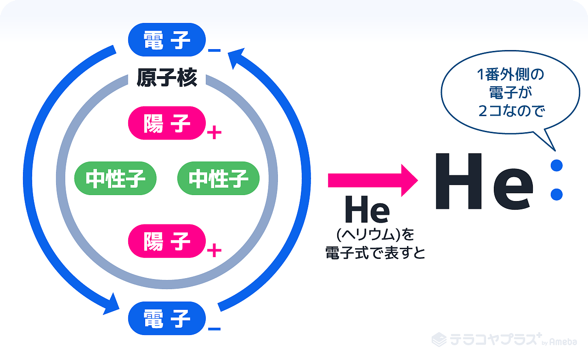
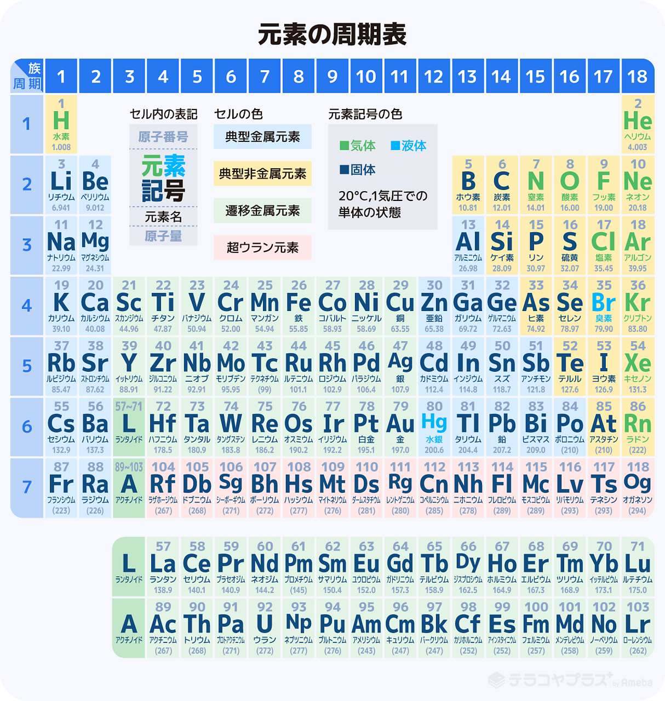

分子式
1つの分子を構成する元素とその数をただ単に羅列したもの。
例1. 酢酸：C2H4O2
例2. グルコース：C6H12O6
組成式
分子式を最も小さい比率(存在比)にあらわしたもの。
例1. 酢酸：CH2O
例2. グルコース：CH2O
上記の通り、組成式だと酢酸とグルコースが同じ式になる。
電子式
元素記号の周りの最も外側の電子（最外殻電子）だけを"・"で表した式のこと。
主に、不対電子と電子対を可視化するのに用いる。
原子について
- 原子核：原子の中心にある。中に陽子があるのでプラスの電気を帯びている
- 電子：原子核の中心を回っている粒
- 陽子：原子核の中にあり、プラスの電気を帯びている粒
- 中性子；電気を帯びていない（プラスでもマイナスでもない）粒

構造式
化合物の原子構造(結合の順序・結合の仕方・立体的な情報)を表した式のこと。
化合物とは2種類以上の元素が結び付いた物質の事。
つまり構造式は、化合物がどのように結合しているのかを表した式のこと。
主に有機物を表すのに使われる。
イオン式
イオンを元素記号と価数で表したもの。
酸素は"O"、水素は"H"…など元素をアルファベットで表したものを元素記号といい、それぞれに原子番号が割り当てられている。
原子を原子番号順に並べ、性質の類似した元素が縦に並ぶように配置した表を周期表という。

基本的な周期表
- H:水素
- He:ヘリウム
- Li:リチウム
- Be:ベリリウム
- B:ホウ素
- C:炭素
- N:窒素
- O:酸素
- F:フッ素
- Ne:ネオン
- Na:ナトリウム
- Mg:マグネシウム
- Al:アルミニウム
- Si:ケイ素
- P:リン
- S:硫黄
- Cl:塩素
- Ar:アルゴン
- K:カリウム
- Ca:カルシウム